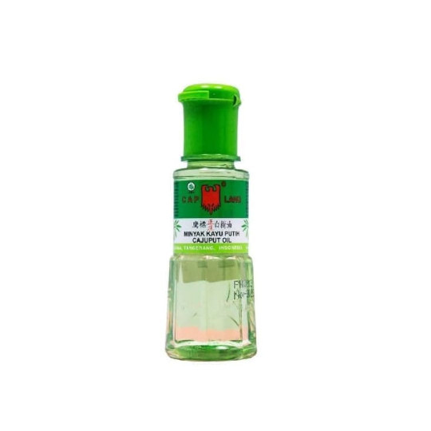

Obat-obatan Ringan yang Direkomendasikan untuk Digunakan
Salep Gentamicin
Digunakan untuk mengobati luka lecet ringan. Oleskan secara tipis pada area yang terluka sesuai anjuran tenaga medis.
Salep Bioplacenton
Efektif untuk mengatasi luka bakar ringan. Oleskan pada area luka yang sudah dibersihkan untuk membantu penyembuhan dan mencegah infeksi.

Parasetamol
Digunakan untuk meredakan demam dan sakit kepala. Konsumsi parasetamol sesuai dosis yang tertera atau sesuai anjuran dokter, dan hindari penggunaan berlebihan.
Antasid (Promag, Mylanta)
Dapat digunakan untuk mengurangi gejala mual dan muntah yang disebabkan oleh gangguan lambung. Dikonsumsi sesuai petunjuk yang ada di kemasan.
Dimenhidrinat
jika digunakan mual dan muntah sudah cukup parah, misalnya akibat mabuk perjalanan. Konsumsi sesuai petunjuk pada kemasan dan hindari penggunaan berlebihan.
Domperidone
umumnya digunakan untuk mengatasi sakit lambung, mual, dan muntah. Penggunaan harus sesuai dosis yang dianjurkan oleh tenaga kesehatan.
Asam Mefenamat
Digunakan sebagai pereda nyeri seperti parasetamol, namun hindari penggunaannya jika memiliki riwayat maag atau gangguan lambung lainnya. Konsultasikan kepada dokter untuk penggunaan yang tepat.
Obat Diare (Nyudiatap, Diapet)
Digunakan untuk mengatasi diare, yang ditandai dengan buang air besar lebih dari empat kali dalam sehari. Pastikan mengonsumsi cairan yang cukup untuk mencegah dehidrasi.
Ibuprofen
obat pereda nyeri dan penurun demam. Obat ini bisa meredakan nyeri haid, sakit kepala, migrain, sakit gigi, sakit pinggang, nyeri terkilir, atau demam saat flu maupun pilek.

Minyak Kayu Putih
Minyak kayu putih adalah minyak esensial yang diekstrak dari daun pohon Eucalyptus. Minyak ini memiliki sifat antiseptik, antiinflamasi, dan relaksan. Biasanya digunakan untuk meredakan pilek, batuk, sakit kepala, serta mengurangi nyeri otot atau sendi. Minyak kayu putih sering digunakan dengan cara dioleskan pada bagian tubuh yang sakit atau dihirup uapnya.
Hansaplast
Hansaplast adalah merek plester atau perban medis yang digunakan untuk menutup luka kecil atau lecet pada kulit. Plester ini memiliki lapisan perekat yang kuat namun tetap lembut di kulit, sehingga membantu menjaga luka tetap bersih dan terlindungi dari kuman. Hansaplast juga tersedia dalam berbagai jenis, seperti plester dengan bahan penyembuh atau anti-infeksi.
Kasa Steril
Kasa steril adalah kain berbahan katun atau material lainnya yang telah disterilkan untuk digunakan dalam perawatan luka. Kasa ini digunakan untuk menutup luka agar tidak terkontaminasi kuman dan membantu proses penyembuhan. Kasa steril sering dipakai dalam pengobatan luka pasca-operasi, luka bakar, atau luka ringan lainnya untuk memberikan perlindungan ekstra
Kapas Bola
Alat kesehatan berbentuk bola kapas kecil yang lembut dan steril, digunakan untuk membersihkan luka atau mengoleskan cairan antiseptik.
Minyak Tawon
Minyak herbal yang digunakan sebagai pereda nyeri otot dan pegal, serta mengurangi gatal akibat gigitan serangga.
Intunal
Obat flu untuk meredakan gejala seperti hidung tersumbat, pilek, dan alergi, membantu memperbaiki pernapasan selama saki

Hot in Cream
"Hot in cream" adalah sebutan untuk produk krim penghangat yang biasa digunakan untuk mengurangi rasa nyeri otot dan sendi. Produk ini umumnya mengandung bahan-bahan seperti menthol, camphor, atau capsaicin, yang memberikan sensasi panas saat dioleskan ke kulit. Sensasi panas tersebut membantu meredakan ketegangan otot dan meningkatkan aliran darah di area yang sakit.
Counterpain
Counterpain adalah salep atau gel pereda nyeri yang digunakan untuk mengatasi nyeri otot, sendi, keseleo, dan ketegangan. Produk ini mengandung bahan-bahan aktif seperti menthol, methyl salicylate, dan eugenol, yang memberikan sensasi panas ataupun dingin saat dioleskan ke kulit. Sensasi panas dan dingin (varian coolin) ini bekerja dengan cara merangsang aliran darah ke area yang sakit, mengurangi rasa nyeri, dan memberikan efek relaksasi pada otot yang tegang.
Fresh Care
Fresh Care adalah produk minyak angin aromaterapi yang dikemas dalam bentuk roll-on, sehingga mudah digunakan dan praktis dibawa. Produk ini digunakan untuk membantu meredakan pusing, mual, pegal, serta memberikan efek relaksasi. Fresh Care mengandung bahan-bahan seperti minyak eucalyptus, menthol, dan camphor.
Betadine
Betadine adalah antiseptik yang sering digunakan untuk membersihkan dan mendisinfeksi luka agar mencegah infeksi. Produk ini mengandung bahan aktif povidone-iodine, yang bekerja dengan membunuh berbagai jenis bakteri, virus, dan jamur di area yang terkena. Betadine biasanya tersedia dalam bentuk cairan antiseptik, salep, dan solusi kumur untuk berbagai keperluan, baik untuk luka ringan seperti lecet atau goresan, maupun luka operasi kecil.